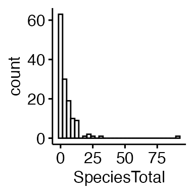

Selecting different species and landovers from the wildlifeR package
data_cleaning_selecting_different_spp_and_landcovers.Rmd
library(compbio4all)Introduction
Most examples associated with the BBS data from the wildlifeR package relate to forest birds and how their abundance changes with variation in forest cover (eg the Scarlet Tanager and the Pileated Woodpecker). In this example we’ll look at urban and forest habitats.
Installing widlifeR
The current version of wildlifeR can be downloaded like this:
#load devtools
library(devtools)
#> Loading required package: usethis
#download wildlifeR from github
install_github("brouwern/wildlifeR")
#> Skipping install of 'wildlifeR' from a github remote, the SHA1 (29f3ae31) has not changed since last install.
#> Use `force = TRUE` to force installation
#load wildlifeR into your current R sessions
library(wildlifeR)
#>
#> Attaching package: 'wildlifeR'
#> The following objects are masked from 'package:compbio4all':
#>
#> combine_NLCD_classes, expand_BBS_routes, make_my_data2L,
#> NA_to_zero, sample_BBS_routes, sample_dove_routesSelecting a focal bird species
We’ll look at the Brown Headed Cowbirds. Its alphabetic code is “BHCO”.
Determing the numeric species code
In their database the USGS uses AOU numeric codes, not alphabetic codes. We can look up numeric codes using the dataset AOU_species_codes included in wildlifeR.
First, load the AOU code data
data(AOU_species_codes)Then make sure the dplyr package is loaded
library(dplyr)
#>
#> Attaching package: 'dplyr'
#> The following objects are masked from 'package:stats':
#>
#> filter, lag
#> The following objects are masked from 'package:base':
#>
#> intersect, setdiff, setequal, unionWe can see the entry for BHCO and its numeric code in the “spp.num” code using the dplyr function filter()
AOU_species_codes %>% filter(alpha.code == "BHCO")
#> spp.num alpha.code name spp order
#> 1 4950 BHCO Brown-headed Cowbird Molothrus ater 1089A more detailed walk through of this process can be found in the vignette “Data Cleaning: Filtering focal rows with dplyr”. This vignette can most easily be accessed at the wildlifeR website https://brouwern.github.io/wildlifeR/ .
The filter() code above tells us that the the numeric code is 4950 We can use this number to extract just the BHCO data. We’ll save this data to an object called “BBA_PA_BHCO”. (Note that the species code is not the same row number of the dataframe).
BBS_PA_BHCO <- BBS_PA %>% filter(Aou == "4950")Selecting a focal analysis question
We’ll be examining this data:
- How does the abundance of a focal bird species in Pennsylvania vary with the type of habitat in the landscape.
Formatting data for habitat analyses
Subsetting bird data
The habitat data used wildlifeR was collected in 2006. We will therefore use the filter() command again to isolate just that year of data. (Note that “Year” has a capital “Y” while the rest is lowercase).
BBS_PA_BHCO_2 <- BBS_PA_BHCO %>% filter(Year == 2006)Preparing habitat data
The habitat data are found in the dataframe BBS_PA_landcover_1km. For each BBS route the number of pixels of different habitat was determined using a GIS. These data are from the National Land Cover Dataset (NCLD) and each column is a different type of cover.
data(BBS_PA_landcover_1km)Urban cover classes are numbers 21 through 24. These represent variosu “developed” landcovers with different intensities of develoement and impervious surfaces. See the help file using ?BBS_PA_landcover_1km for more information. Forest land covers are numbers 41, 42, 43.
W’ll isolate both the urban and forestlandcovers and the Route number in a new dataframe called BBS_PA_landcover_1km_2. We’ll also take the “SUM” column, which is the total number of pixels in the buffer around the BBS route (this varies somewhat between routes and so landcover needs to be expressed as a proportions; see below)
BBS_PA_landcover_1km_2 <- BBS_PA_landcover_1km %>%
dplyr::select(Route,
NLCD.21, # Developed Open Space
NLCD.22, # ... Low Intensity
NLCD.23, # ... Medium Intensity
NLCD.24, # ... High Intensity
NLCD.41, # Deciduous forest
NLCD.42, # Evergreen
NLCD.43, # Mixed
SUM)Combining landcovers
Combining urban landcover classes
For the sake of simplicity let’s combine all four of these urban landcovers into a single “total.urban” land cover class. We’ll add up the four NCLD columns put the result into a new columns “total.urban.”
We’ll use dplyr’s mutate() command to accheive this. We “pipe” the BBS_PA_landcover_1km_2 dataframe to mutate(); within mutate we say we want a new column “total.urban”, and that this new column will be built by adding up for columns from within BBS_PA_landcover_1km_2.
BBS_PA_landcover_1km_2 <- BBS_PA_landcover_1km_2 %>%
mutate(total.urban = NLCD.21+NLCD.22+NLCD.23+NLCD.24)The results looks like this:
head(BBS_PA_landcover_1km_2)
#> Route NLCD.21 NLCD.22 NLCD.23 NLCD.24 NLCD.41 NLCD.42 NLCD.43 SUM
#> 1 1 9025 4861 1085 230 44953 563 797 98591
#> 2 2 11340 3425 142 6 25119 1130 48 82345
#> 3 3 5638 2078 344 34 34154 521 78 86328
#> 4 4 4757 1753 250 32 39813 1695 60 88526
#> 5 5 5273 1238 269 15 32244 5892 3518 97708
#> 6 6 3444 384 71 7 50529 4674 13320 87503
#> total.urban
#> 1 15201
#> 2 14913
#> 3 8094
#> 4 6792
#> 5 6795
#> 6 3906Combining forst land cover classes
We’ll do the same thing for the forest landcovers
BBS_PA_landcover_1km_2 <- BBS_PA_landcover_1km_2 %>%
dplyr::mutate(total.forest = NLCD.41+NLCD.42+NLCD.43)Calculating proportionages of habitat
The raw habitat data are actual counts of the number of pixels classified as a given habitat by a GIS. The number of pixels varies a little bit between routes, so to make everything comparable we need to calculate the proportionage of each forest cover. This can be done by dividing each habitat class by the SUM column
BBS_PA_landcover_1km_2$urban.proportion <- BBS_PA_landcover_1km_2$total.urban/BBS_PA_landcover_1km_2$SUM
BBS_PA_landcover_1km_2$forest.proportion <- BBS_PA_landcover_1km_2$total.forest/BBS_PA_landcover_1km_2$SUMMerging bird counts and habitat cover
Now we need to line up the data on the number of BHCO observed on each route in our BBA_PA_BHCO_2 dataframe with the habitat data in BBS_PA_landcover_1km_2. This can be done using the full_join() function in dplyr. This joins (combines) the two dataframes together.
BBS_PA_BHCO_3 <- dplyr::full_join(BBS_PA_BHCO_2 ,
BBS_PA_landcover_1km_2,
by = "Route")The habitat data in BBS_PA_landcover_1km_2 contains data from each route in PA, but BHCO wasn’t seen on every route. To line things up dplyr has inserted NA value where data were missing from BBA_PA_BHCO_2. We can get rid of these NAs like this
First, make all the “years” equal to 2006, all the Aou codes equal to 4950, and assign an alphabetic species code for each reference
BBS_PA_BHCO_3$Year <- 2006
BBS_PA_BHCO_3$Aou <- 4950
BBS_PA_BHCO_3$name <- "BHCO"There are NA values in the “StopTotal” column, which has our counts of the number of birds. We want these to be zero. We can fix this, using the function NA_to_zero() from the wildlifeR package.
BBS_PA_BHCO_4 <- NA_to_zero(dat = BBS_PA_BHCO_3,
column = "SpeciesTotal")The data are now read for analysis. To save the data for future use use the write.csv() command.
write.csv(BBS_PA_BHCO_4, file = "BHCO_vs_forest_cover.csv")Plotting Data
Exploratory analysis
THis dataset contains an extreme outlier where >75 cowbirds were seen. This is suspect to me. We can visualize this using a boxplot and a histogram
Boxplot
The function ggboxplot() in the ggpubr package make boxplots.
library(ggpubr)
#> Loading required package: ggplot2
ggboxplot(data = BBS_PA_BHCO_4,
y = "SpeciesTotal",
ylab = "",
xlab = "")
Histograms
gghistogram() makes histograms. Note that we use the arguement x = “SpeciesTotal”.
gghistogram(data = BBS_PA_BHCO_4,
x = "SpeciesTotal")
#> Warning: Using `bins = 30` by default. Pick better value with the argument
#> `bins`.
Removing an outlier3
This observation is very very odd so I am going to remove it. Normally I would do a very thorough investigation of this datapoint and try to go back to the raw data if possible to determine what is going on. For the sake of this exercise, I will make the very strong assumption that its a complete error (eg typo during data entry) and remove it. This should only be done to your own data with extreme care, thorough documentation, and total tranparency.
I can use a logical arguement using the “>” operator to identify the row that the outlier is in.
which(BBS_PA_BHCO_4$SpeciesTotal > 75)
#> [1] 76I will save this row number to an object called “outlier.index” then set the value of SpeciesTotal in that row to NA
outlier.index <- which(BBS_PA_BHCO_4$SpeciesTotal > 75)
BBS_PA_BHCO_4$SpeciesTotal[outlier.index] <- NAAgain, I would normally only do this after very thorough investigation as to the origin of this extreme value.
Plotting polished graphs
We can visualize the relationship between the Brown-headed cowbird and forest cover using a scatterplot using the ggpubr extentsion to ggplot2. Since we’re examining two variables we’ll make a two-panel plot with total urban habitat (as a proportion) on the left and total forest habitat on the right.
To set up this graph we’ll use the plotgrid() function from the cowplot library.
First, we need to make to plots and assign them to R objects. We’ll call them urban.plot and forest.plot. Note that to make these plots look nice I do the following things
- Add a regression line using add = “reg.line”
- Add a confidence interval to the line using conf.int = TRUE,
- Label the x and y axes using xlab and ylab
- Change the shape of the points in the 2nd graph using shape = 23
- Change the fill color using fill = “geen”
Note that you can only change hte fill color for certain shape numbers (21 through 25).
urban.plot <- ggscatter(data = BBS_PA_BHCO_4,
y = "SpeciesTotal",
x = "urban.proportion",
add = "reg.line",
conf.int = TRUE,
xlab = "Proportion urban habitat",
ylab = "Number of cowbirds")
forest.plot <- ggscatter(data = BBS_PA_BHCO_4,
y = "SpeciesTotal",
x = "forest.proportion",
add = "reg.line",
conf.int = TRUE,
xlab = "Proportion forest habitat",
ylab = "Number of cowbirds",
shape = 23,
fill = "green")Now I’ll use plot_grid() to layout the two panels
library(cowplot)
#>
#> Attaching package: 'cowplot'
#> The following object is masked from 'package:ggpubr':
#>
#> get_legend
plot_grid(urban.plot,
forest.plot,
labels = c("A", "B"))
#> `geom_smooth()` using formula 'y ~ x'
#> Warning: Removed 1 rows containing non-finite values (stat_smooth).
#> Warning: Removed 1 rows containing missing values (geom_point).
#> `geom_smooth()` using formula 'y ~ x'
#> Warning: Removed 1 rows containing non-finite values (stat_smooth).
#> Warning: Removed 1 rows containing missing values (geom_point).
Data modeling
Present results
Tidy results
Look at “tidy” output using the tidy() function from the broom package. This is brief but doesn’t contain everything. For more info on broom see https://cran.r-project.org/web/packages/broom/vignettes/broom.html
We’ll also set R to round things off for us a bit using the option options(digits=4)
Note that the output of tidy() will often be in scientific notation, where “e-x” is used to indicate what is often written as “10^-x”. Eg, “5e-2” equals 5*10^-2, which equals 0.05. 5e-3 equals 0.005.
library(broom)
options(digits=3)
tidy(m.null)
#> # A tibble: 1 x 5
#> term estimate std.error statistic p.value
#> <chr> <dbl> <dbl> <dbl> <dbl>
#> 1 (Intercept) 3.74 0.451 8.29 1.01e-13
tidy(m.urban)
#> # A tibble: 2 x 5
#> term estimate std.error statistic p.value
#> <chr> <dbl> <dbl> <dbl> <dbl>
#> 1 (Intercept) 3.39 0.728 4.65 0.00000787
#> 2 urban.proportion 3.17 5.06 0.626 0.532
tidy(m.forest)
#> # A tibble: 2 x 5
#> term estimate std.error statistic p.value
#> <chr> <dbl> <dbl> <dbl> <dbl>
#> 1 (Intercept) 5.32 1.16 4.57 0.0000110
#> 2 forest.proportion -2.83 1.93 -1.47 0.145Full results
Look at full output using summary()
Full results null model
The null model has only an interecept. Its summary() output is not particularly interesting. The intecept here is highly significant, but this really isn’t very useful to us.
summary(m.null)
#>
#> Call:
#> lm(formula = SpeciesTotal ~ 1, data = BBS_PA_BHCO_4)
#>
#> Residuals:
#> Min 1Q Median 3Q Max
#> -3.74 -3.74 -1.74 2.26 26.26
#>
#> Coefficients:
#> Estimate Std. Error t value Pr(>|t|)
#> (Intercept) 3.743 0.451 8.29 1e-13 ***
#> ---
#> Signif. codes: 0 '***' 0.001 '**' 0.01 '*' 0.05 '.' 0.1 ' ' 1
#>
#> Residual standard error: 5.26 on 135 degrees of freedom
#> (1 observation deleted due to missingness)Full results urban landcover model
The urban landcover model has two parameters: intercept and the slope. Note that R doesn’t provide names that are necessarily easy to understand. It also provides things printed out to lots of decimal places, which can be distracting, hence why we set options(digits=4).
summary(m.urban)
#>
#> Call:
#> lm(formula = SpeciesTotal ~ urban.proportion, data = BBS_PA_BHCO_4)
#>
#> Residuals:
#> Min 1Q Median 3Q Max
#> -4.95 -3.66 -1.61 2.23 26.13
#>
#> Coefficients:
#> Estimate Std. Error t value Pr(>|t|)
#> (Intercept) 3.385 0.728 4.65 7.9e-06 ***
#> urban.proportion 3.170 5.061 0.63 0.53
#> ---
#> Signif. codes: 0 '***' 0.001 '**' 0.01 '*' 0.05 '.' 0.1 ' ' 1
#>
#> Residual standard error: 5.28 on 134 degrees of freedom
#> (1 observation deleted due to missingness)
#> Multiple R-squared: 0.00292, Adjusted R-squared: -0.00452
#> F-statistic: 0.392 on 1 and 134 DF, p-value: 0.532Full results forest model
The mixed forest model has the same basic format, though the values are different.
summary(m.forest)
#>
#> Call:
#> lm(formula = SpeciesTotal ~ forest.proportion, data = BBS_PA_BHCO_4)
#>
#> Residuals:
#> Min 1Q Median 3Q Max
#> -5.26 -3.65 -1.57 2.36 25.63
#>
#> Coefficients:
#> Estimate Std. Error t value Pr(>|t|)
#> (Intercept) 5.32 1.16 4.57 1.1e-05 ***
#> forest.proportion -2.83 1.93 -1.47 0.14
#> ---
#> Signif. codes: 0 '***' 0.001 '**' 0.01 '*' 0.05 '.' 0.1 ' ' 1
#>
#> Residual standard error: 5.24 on 134 degrees of freedom
#> (1 observation deleted due to missingness)
#> Multiple R-squared: 0.0158, Adjusted R-squared: 0.00844
#> F-statistic: 2.15 on 1 and 134 DF, p-value: 0.145Hypothesis testing
P-values from the summary() command are not to be used for final analyses. To compare to models and get a p-value use the anova() command.
Deciduous versus null
anova(m.null,
m.urban)
#> Analysis of Variance Table
#>
#> Model 1: SpeciesTotal ~ 1
#> Model 2: SpeciesTotal ~ urban.proportion
#> Res.Df RSS Df Sum of Sq F Pr(>F)
#> 1 135 3742
#> 2 134 3731 1 10.9 0.39 0.53Mixed versus null
anova(m.null,
m.forest)
#> Analysis of Variance Table
#>
#> Model 1: SpeciesTotal ~ 1
#> Model 2: SpeciesTotal ~ forest.proportion
#> Res.Df RSS Df Sum of Sq F Pr(>F)
#> 1 135 3742
#> 2 134 3683 1 59.1 2.15 0.14Transformations
Compare with anova()
anova(m.null.log,
m.urban.log)
#> Analysis of Variance Table
#>
#> Model 1: SpeciesTotal.log ~ 1
#> Model 2: SpeciesTotal.log ~ urban.proportion
#> Res.Df RSS Df Sum of Sq F Pr(>F)
#> 1 135 138
#> 2 134 137 1 0.907 0.89 0.35
anova(m.null.log,
m.forest.log)
#> Analysis of Variance Table
#>
#> Model 1: SpeciesTotal.log ~ 1
#> Model 2: SpeciesTotal.log ~ forest.proportion
#> Res.Df RSS Df Sum of Sq F Pr(>F)
#> 1 135 138
#> 2 134 137 1 0.385 0.38 0.54COmpare with AIC
AICtab(m.null.log,
m.urban.log,
m.forest.log)
#> dAIC df
#> m.null.log 0.0 2
#> m.urban.log 1.1 3
#> m.forest.log 1.6 3